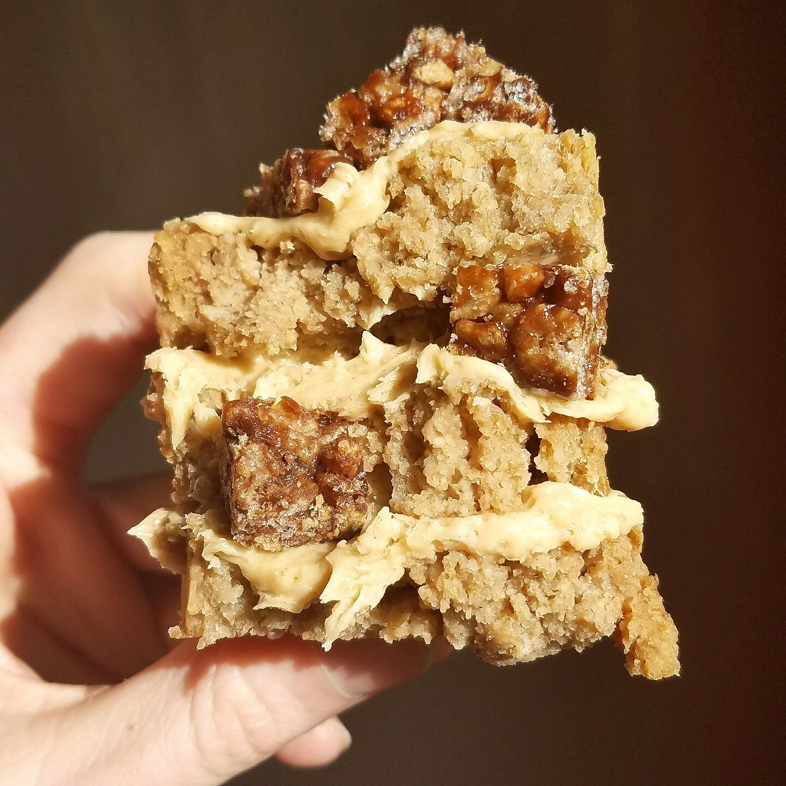

Peanut Butter Banana Bread (gf, vegan)

I made the yummiest peanut butter banana bread this weekend. This recipe is simple, sugar free, vegan, and can be gluten free! That's hard to beat when a recipe tastes delicious and is good for you.
There's something about banana bread that is so irresistible. The sweet taste, the cakey texture, the comfort of it... I used to always keep banana bread around in the fridge, but I guess I got sick of it and didn't make any for months! That seems crazy. But I'm back on a kick and I'm on my third loaf in less than 2 weeks, ha.
I like playing around with flavors each time, but this peanut butter banana bread recipe, in particular, is a clear winner amongst others. I topped my banana bread with with peanut butter icing & Doughbar Doughnuts new chocolate crisp protein treat for a heavenly sandwich of chewy, crunchy, sweet, smooth goodness. I can hear Xhibit now - "I heard you like peanut butter so I put peanut butter on your peanut butter banana bread so you can peanut butter while you peanut butter."
Answer me this - Do you have banana bread on hand right now? If not, FIX THAT. Try this out and let me know what you think! It's great once it cools, but the real secret here is that it's even more amazing after it's chilled in the fridge. I don't know why or how, it just. is.
Peanut Butter Banana Bread
Serves: 12
-
3 bananas
-
2 cups raw oats
-
1/2 cup spelt flour (or more oats, if gluten free)
-
1 cup peanut butter powder
-
1/4 cup baking stevia(Optional)
-
1/2 TBSP baking powder
-
1 cup unsweetened almond milk
-
Preheat the oven to 350F.
-
Mash the bananas in a bowl. Grind your oats into a flour, and add to the mashed bananas. Add in the remaining dry ingredients and mix. Slowly add the almond milk while stirring. Continue to mix everything until homogenous and no dry lumps remain.
-
Pour the batter into a bread loaf pan and bake at 350F for 50 mins.
-
Let cool 10-15 minutes, slice into 12 slices, and enjoy!